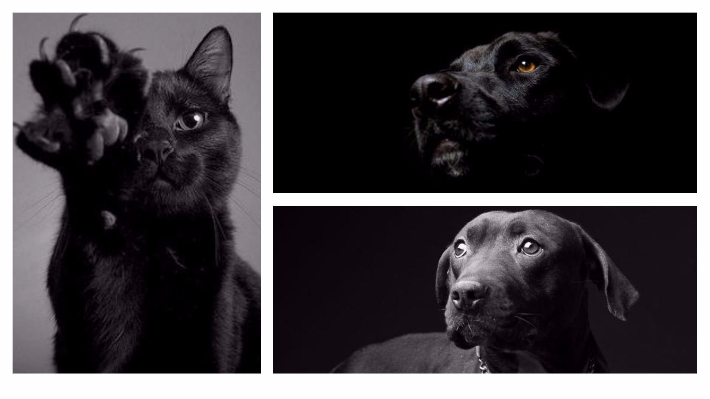

Take a pet é um site sem fins lucrativos que visa ajudar a divulgar e promover cães, gatos e outros animais comunitários ou desabrigados através de uma maneira simples e rápida para que consigam achar um lar e uma família para amá-los!
"Os cães são o nosso elo com o Paraíso. Eles não conhecem a maldade, a inveja ou o descontentamento. Sentar-se com um cão ao pé de uma colina numa linda tarde, é voltar ao Éden onde ficar sem fazer nada não era tédio, era paz."
- Milan Kundera